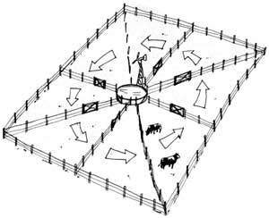

With HRM, the stock is concentrated in one area at a time. When the animals return to where they started, fresh grass is waiting. Twelve or thirteen days in each section will give the land 90 days' rest between grazings. Four or five days will give the land 30 days' rest.